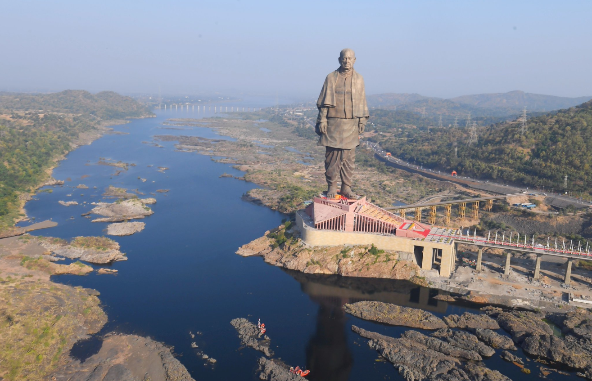
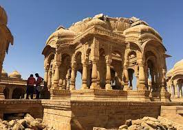
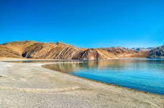
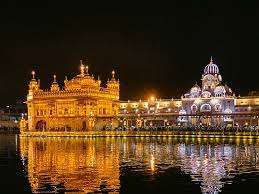
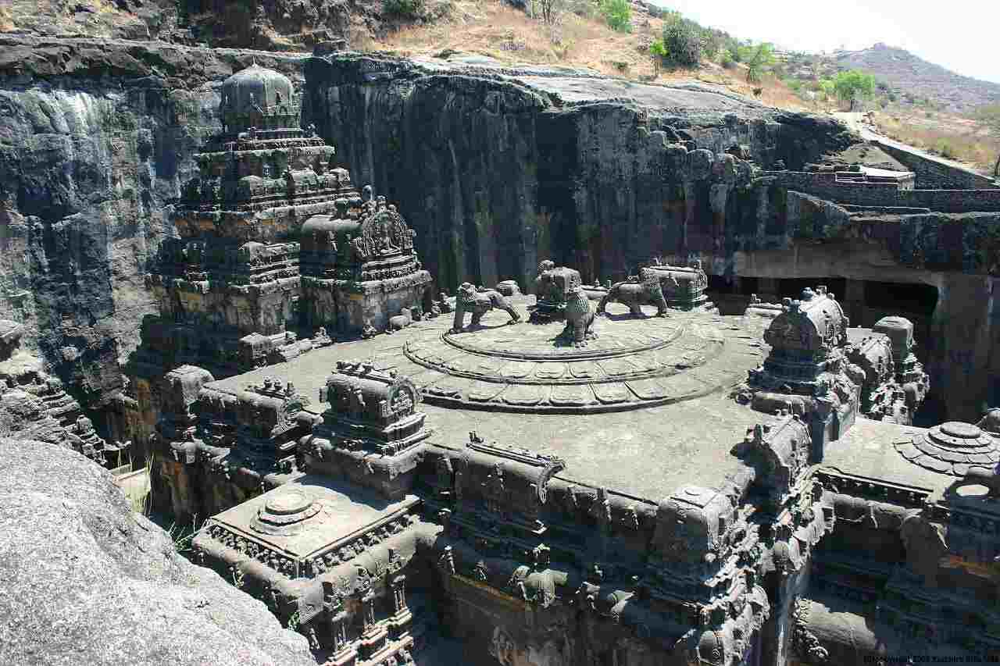

Incredible India
Popular Destination in India
| Destination | Details |
|---|
| Statue of Unity
 . | The Statue of Unity is a statue of Indian statesman and independence activist Vallabhbhai Patel (1875–1950), who was the first deputy prime minister and home minister of independent India and an adherent of Mahatma Gandhi. Patel was highly respected for his leadership in uniting 562 princely states of India with a major part of the former British Raj to form the single Union of India. The Statue of Unity is the world's tallest statue, with a height of 182 metres (597 feet).[3] It is located in the state of Gujarat, India, on the Narmada River in the Kevadiya colony, facing the Sardar Sarovar Dam 100 kilometres (62 mi) southeast of the city of Vadodara. |
|---|
TAJ MAHAL
 . . | The Taj Mahal was designated as a UNESCO World Heritage Site in 1983 for being "the jewel of Muslim art in India and one of the universally admired masterpieces of the world's heritage". It is regarded by many as the best example of Mughal architecture and a symbol of India's rich history. The Taj Mahal attracts more than 6 million visitors a year[3] and in 2007, it was declared a winner of the New 7 Wonders of the World (2000–2007) initiative. |
|---|
| Jaisalmer
 . | Jaisalmer , nicknamed "The Golden city", is a city in the Indian state of Rajasthan, located 575 kilometres (357 mi) west of the state capital Jaipur. The town stands on a ridge of yellowish sandstone and is crowned by the ancient Jaisalmer Fort. This fort contains a royal palace and several ornate Jain temples. Many of the houses and temples of both the fort and of the town below are built of finely sculptured sandstone. The town lies in the heart of the Thar Desert (the Great Indian Desert) and has a population, including the residents of the fort, of about 78,000. It is the administrative headquarters of Jaisalmer District. Jaisalmer was once the capital of Jaisalmer State |
|---|
Kerala
 . . | The Chera Dynasty was the first prominent kingdom based in Kerala. The Ay kingdom in the deep south and the Ezhimala kingdom in the north formed the other kingdoms in the early years of the Common Era (CE). The region had been a prominent spice exporter since 3000 BCE. The region's prominence in trade was noted in the works of Pliny as well as the Periplus around 100 CE. In the 15th century, the spice trade attracted Portuguese traders to Kerala, and paved the way for European colonisation of India. At the time of Indian independence movement in the early 20th century, there were two major princely states in Kerala: Travancore and Cochin. They united to form the state of Thiru-Kochi in 1949. The Malabar region, in the northern part of Kerala, had been a part of the Madras province of British India, which later became a part of the Madras State post-independence. After the States Reorganisation Act, 1956, the modern-day state of Kerala was formed by merging the Malabar district of Madras State (excluding Gudalur taluk of Nilgiris district, Lakshadweep Islands, Topslip, the Attappadi Forest east of Anakatti), the taluk of Kasaragod (now Kasaragod District) in South Canara (Tulunad), and the erstwhile state of Thiru-Kochi (excluding four southern taluks of Kanyakumari district, and Shenkottai taluks).[15] |
|---|
Jaipur
 . . | Jaipur is a popular tourist destination in India and forms a part of the west Golden Triangle tourist circuit along with Delhi and Agra (240 km, 149 mi).[13] It also serves as a gateway to other tourist destinations in Rajasthan su ch as Jodhpur (348 km, 216 mi), Jaisalmer (571 km, 355 mi), Udaipur (421 km, 262 mi), Kota (252 km, 156 mi) and Mount Abu (520 km, 323 mi). Jaipur is located 616 km from Shimla.
On 6 July 2019, UNESCO World Heritage Committee inscribed Jaipur the "Pink City of India" among its World Heritage Sites.[14] The city is also home to the UNESCO World Heritage Sites Amer Fort and Jantar Mantar. |
|---|
| Ladhak
. | In the past Ladakh gained importance from its strategic location at the crossroads of important trade routes,[14] but as the Chinese authorities closed the borders between Tibet Autonomous Region and Ladakh in the 1960s, international trade dwindled. Since 1974, the Government of India has successfully encouraged tourism in Ladakh. As Ladakh is strategically important, the Indian military maintains a strong presence in the region. |
|---|
| Golden Temple
. | The Golden Temple (also known as the Harmandir Sahib, lit. 'abode of God', Punjabi pronunciation: [ɦəɾᵊmən̪d̪əɾᵊ saːɦ(ɪ)bᵊ], or the Darbār Sahib, 'exalted court', [d̪əɾᵊbaːɾᵊ saːɦ(ɪ)bᵊ]) is a gurdwara located in the city of Amritsar, Punjab, India.[2][3] It is the preeminent spiritual site of Sikhism.
The word Harmandir means God’s House. The man-made pool was completed by the fourth Sikh Guru, Guru Ram Das, in 1577.[5][6] In 1604, Guru Arjan placed a copy of the Adi Granth in Harmandir Sahib.The Gurdwara was repeatedly rebuilt by the Sikhs after it became a target of persecution and was destroyed several times by the Mughal, political parties and invading Afghan armies.[2][4][8] Maharaja Ranjit Singh, after founding the Sikh Empire, rebuilt it in marble and copper in 1809, and overlaid the sanctum with gold leaf in 1830. This has led to the name the Golden Temple. |
|---|
Varanasi
 . . | Varanasi is a city on the Ganges river in northern India that has a central place in pilgrimage, death, and mourning in the Hindu world.[10] The name Varanasi was officially so revived after 1947,but the city is still widely known as Banaras or Benares , and since ancient times also as Kashi,[14][15] The city has a syncretic tradition of Muslim artisanship that underpins its tourism.[16][17] Located in the middle-Ganges valley in the southeastern part of the state of Uttar Pradesh, Varanasi lies on the left bank of the river. It is 692 kilometres (430 mi) to the southeast of India's capital New Delhi, 320 kilometres (200 mi) south-east of the state capital, Lucknow, and 121 kilometres (75 mi) east of Allahabad, another Hindu pilgrimage site. |
|---|
| Ajanta Ellora Caves
. | Ellora is a UNESCO World Heritage Site located in the Aurangabad district of Maharashtra, India. It is one of the largest rock-cut Hindu temple cave complexes in the world, featuring Buddhist and Jain monuments with artwork dating from the period 600–1000 CE. Cave 16 features the largest single monolithic rock excavation in the world, the Kailash temple, a chariot-shaped monument dedicated to Lord Shiva. The Kailash temple excavation also features sculptures depicting the gods, goddesses found in Hinduism as well as relief panels summarizing the two major Hindu Epics. |
|---|